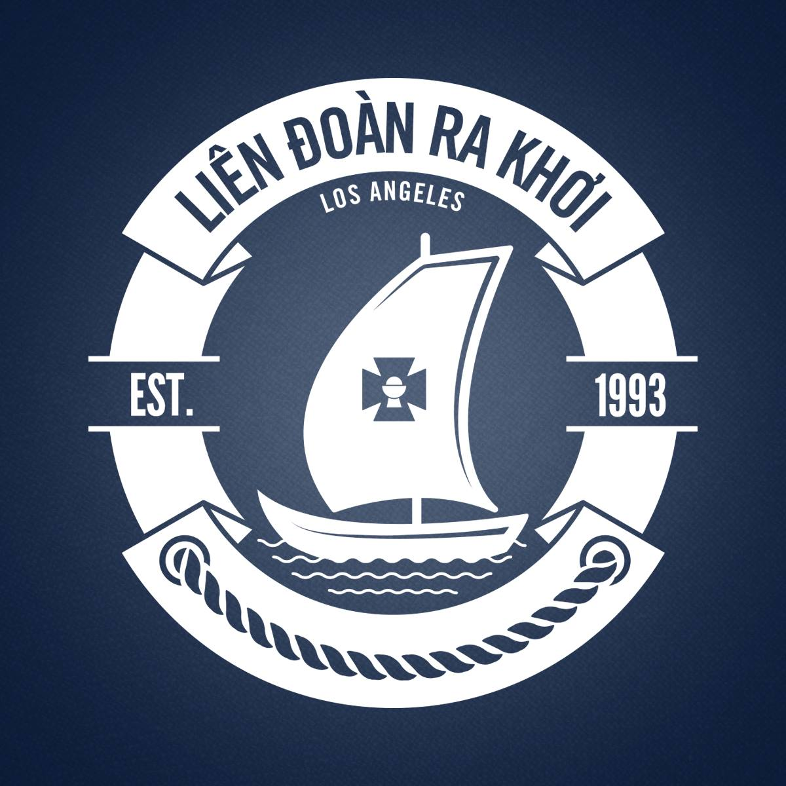

Youth Group Leader
Liên Đoàn Ra Khơi (LDRK)
LDRK consists of 11 chapters that make up the Los Angeles County. In 2015, I became a Catholic youth group leader of one of these chapters to guide and educate children to good morals and discovering their individual values. My mission is to build the kids' faith through Catholic teachings and current affairs.
Vietnamese Eucharistic Youth Movement (VEYM)
The VEYM is a national non-profit organization that focuses on building kids into well-rounded individuals. Its aim is to teach youths to be virtuous people and good Christians. It also offers apostolate services for the youth. Throughout its years of service, the Movement has kept pace with social and cultural changes of the day in an attempt to reach out to the youth of all times. Find out more about The Vietnamese Eucharistic Youth Movement (VEYM) here.